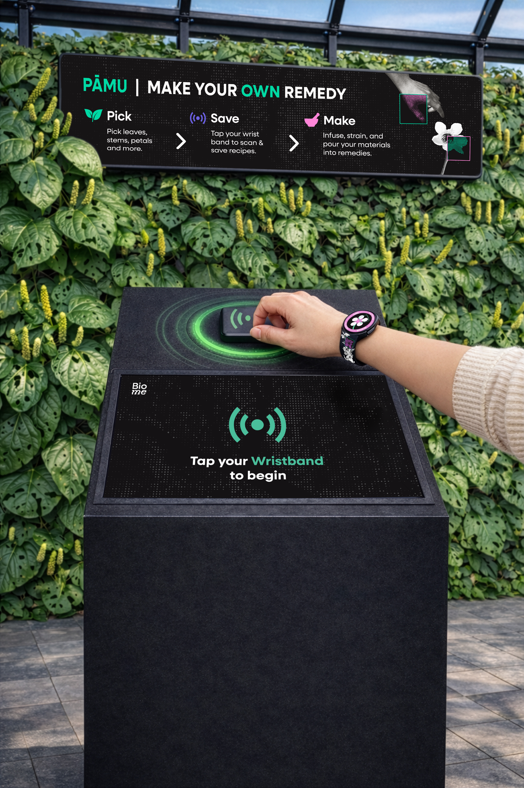
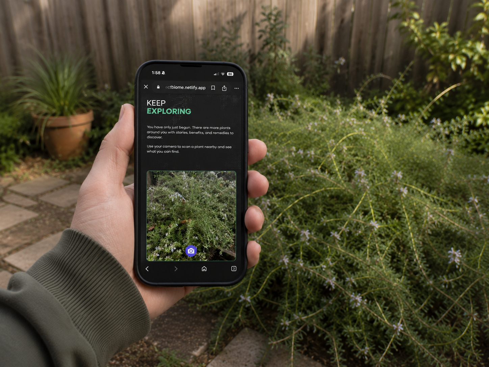
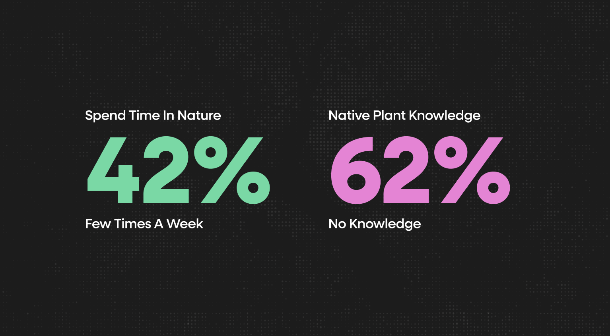
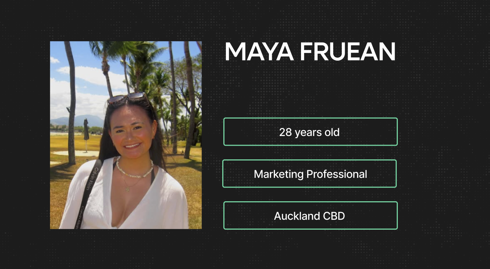
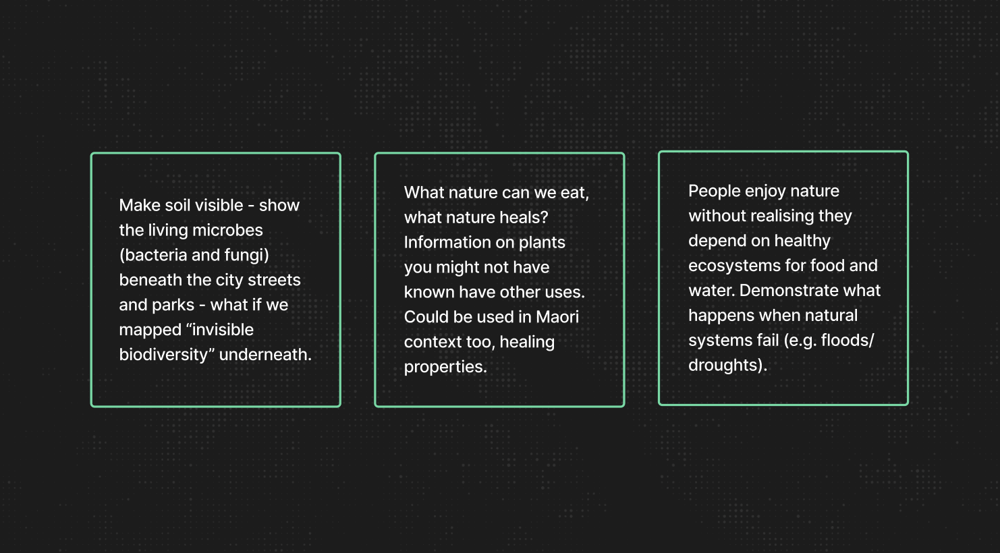
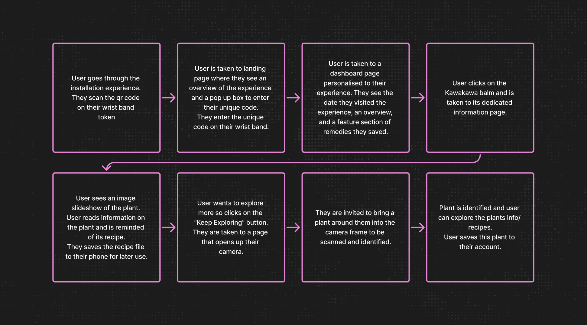
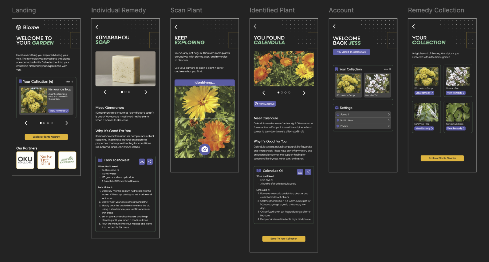
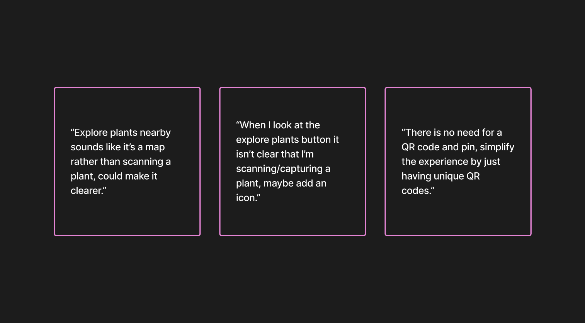
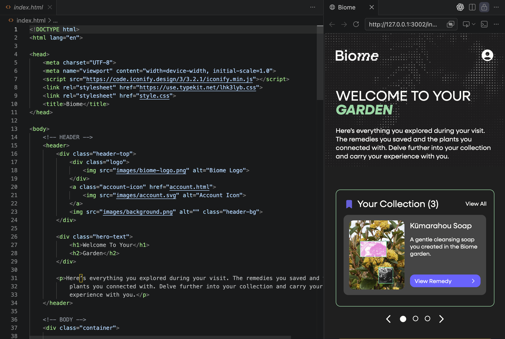

Case Study
Biome
An installation in Commercial Bay where visitors engage with native Māori plants.
Team ProjectMy Roles
- User Research
- UX Design
- Prototyping
- Website Development

An installation in Commercial Bay where visitors engage with native Māori plants.
Team Project
To research and design either a campaign or a system that promotes the understanding of the importance of nurturing and maintaining the natural environment that surrounds us.
Young urban adults value nature and recognise it benefits human wellbeing, yet they lack understanding and knowledge of Māori native plants and their importance to humans.
An interactive garden installation in Commercial Bay where visitors engage with native Māori plants by making remedies through hands-on exploration.



We researched into the benefits of nature on wellbeing, followed by a survey to understand people's knowledge and perceptions of nature.

62% of respondents had no knowledge of Māori native plants and their uses, with just 27% showing some knowledge.
Our target audience is Auckland-based professionals aged 25–30 who spend most of their time indoors and on screens, with limited knowledge of native plants and their benefits.

They spend the least amount of time outdoors and have limited exposure to native plants and their benefits.
We explored possible outcomes and ultimately decided on an installation in Commercial Bay that educates the public about Māori native plants through the making of remedies.

We chose Commercial Bay as the location for our installation due to its high foot traffic and major transport hub.
I created a user flow for the companion website to map the user journey and ensure plant learning could continue beyond the installation experience.

I developed lo-fi wireframes to integrate the user flow and establish the websites structure and content hierarchy.

We conducted user testing to gather feedback on the integration of the installation with the website, including its functionality and interface.

During development, I prioritised user experience, designing features that allow users to easily add, edit, and delete inventory items.
